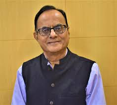

The Indian Institute of Science (IISc) Bangalore is home to world-renowned researchers and educators. These professors have made exceptional contributions to their fields, demonstrating excellence in both groundbreaking research and innovative teaching methodologies.
1

"Bridging fundamental research with national scientific policy for India's development."
Research Focus
- Condensed Matter Physics & Nanoscience
- Quantum Materials & Soft Matter
- Raman Spectroscopy & Ultrafast Processes
450+
Publications
FRS
Royal Society
INSA
President
2

"Advancing data science and machine learning applications for complex geoscientific challenges."
Research Focus
- Machine Learning & Deep Learning
- Geoscience Modeling & Data Analysis
- Computational Data Science
Teaching
Excellence Award
ML/AI
Geoscience Apps
IISc
CDS Department